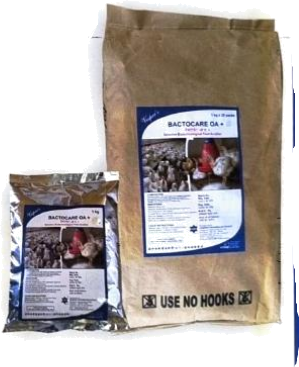

BACTOCARE OA+
Organic acids for health and performance.
The poultry industry keeps searching for strategies to reduce antibiotic usage while maintaining health and performance of the birds thus ensuring profitability.
Organic acids are used globally by the feed industry for management of gut microbiology, improved performance and health.

Poultry Performance Profile of Organic Acids
The use of organic acids ensures better nutrients utilization and use of enzymes like phytase, giving better body weights, improved feed conversion and reduced colonization of gut by the pathogens, thereby reducing disease and disturbance in the flock.
| Acid | Concentration (%) | Effects |
|---|---|---|
| Fumaric acid | 0.50–1.00 | Improvement in weight gain of broilers. |
| Buffered propionic acid | 0.15–0.20 | Improved feed efficiency in both broilers and layers. Increase in dressing percentage in female broilers and reduction in abdominal fat for males. |
| Malic acid | 0.50–2.00 | Increase in weight gain. |
| Sorbic acid | 1.12 | Improves feed efficiency. |
| Tartaric acid | 0.33 | Increase in weight gain. |
| Lactic acid | 2.00 | Feed to gain ratio significantly improved. Body weight gain. |
| Formic acid | 0.50–1.00 | Reduction of caecal pH and bactericidal effect on Salmonella. |
| Benzoic acid | 0.20 | Positive influence on growth. |
| Butyric acid | 0.15 | Maintain the beneficial micro flora. Increase the proliferation and maturation of intestinal cells. |
Gut Microbiology and Gastrointestinal Environment
The term “organic acid” refers to a broad class of compounds used in fundamental metabolic processes of the body. Chemically, organic acids share the common features of water solubility, acidity, and ninhydrin-negativity (no primary or secondary amines).
pH, resident time of feed and microbial population in gastrointestinal tract of chicken
| Part | pH | Resident time (min) | Microflora — Adult |
|---|---|---|---|
| Crop | 4.5–5.3 | 45 | Streptococci · Coliform · Lactobacilli |
| Proventriculus / Gizzard | 2.0–4.5 | 70 | Streptococci · Coliform · Lactobacilli |
| Ileum | 5.6–7.9 | 160–200 | Streptococci · Coliform · Lactobacilli |
| Caeca | 5.8–6.8 | 120 | Bacteroides · Bifidobacteria · Peptostreptococci · Clostridia · Propionic bacteria · Eubacteria |
| Colon / Rectum | 6.3–7.7 | 30–50 | Mixture: Ileal and caecal bacteria |
Product Information
Composition
ORGANIC ACIDS (Formic acid, Sorbic acid, Propionic Acid, Acetic acid, Ascorbic acid and Lactic acid) Ammonium propionate, Ammonium Formate along with fatty acids, yeast extract Amino Nitrogen, LPO, reactive Proteins in a fortified base
Indications
- Reduces the gut pH
- Reduces Multiplication of the pathogenic gram-ve Microorganisms and fungus
- Increase tissue response and improves nutrient utilization
- Reduces disease incidences
- the best alternative to antibiotic growth promoters
- Reduces the duration and cost of treatment.
Usage Instructions
Regular Use: 250 gm – 500 gm/ton of feed.
During Stress: 2 kg/ton of feed.
Or as recommended by the Veterinarian.
Presentation
1 kg × 25 packets in a bag.
